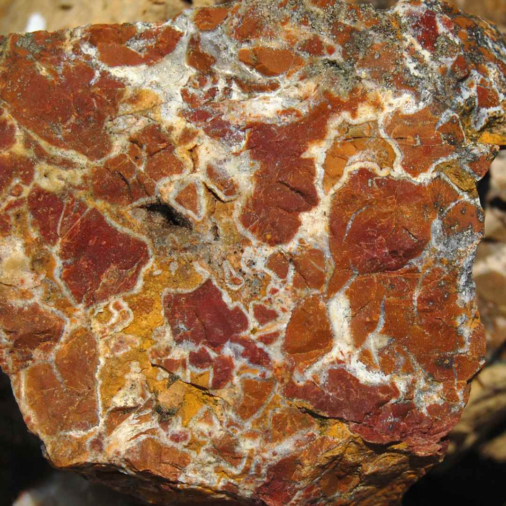
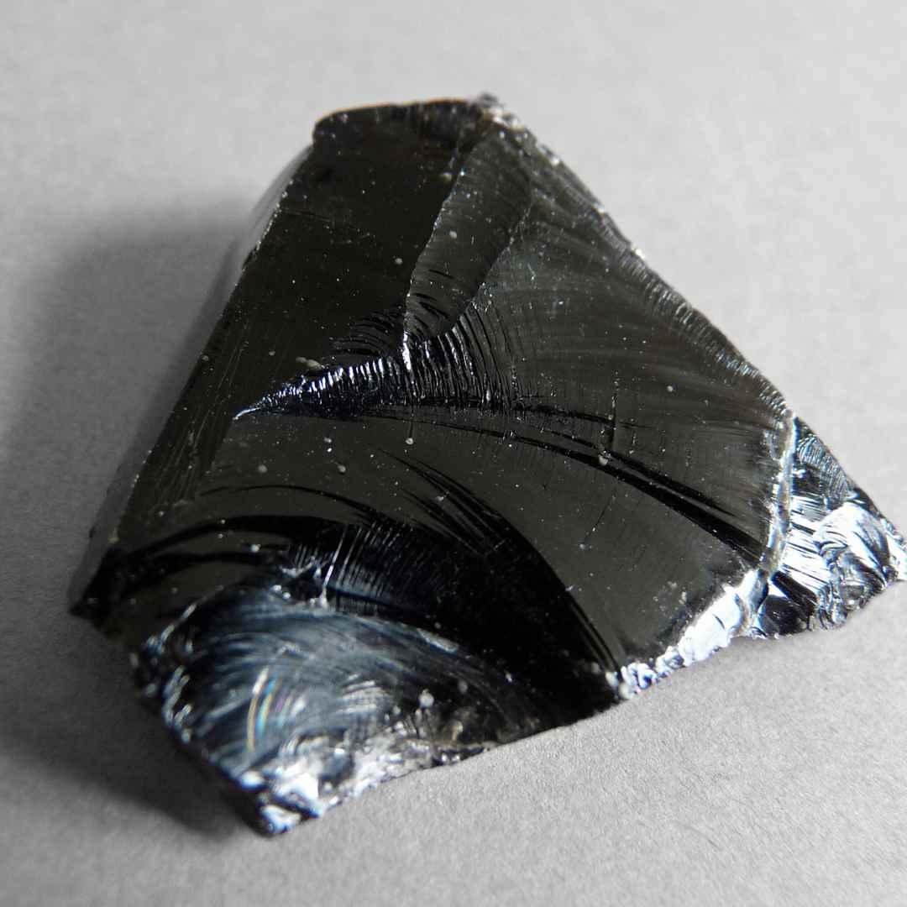

How to Choose the Best Rocks for Tumbling: A Simple and Practical Method
Click here to see our crystal hunting maps
Have you ever been captivated by the smooth, gleaming beauty of tumbled stones? Perhaps you've even considered creating your polished treasures. But before you dive into the world of rock tumbling, it's crucial to choose the right rocks for the job. Selecting the best stones can significantly impact your success and the satisfaction you get from your tumbling experience.
But how do you choose the best rocks for tumbling? Not all rocks are suitable for this process, and some may even damage your tumbler or result in disappointing outcomes. In this article, we will provide you with a simple and practical method for selecting the best rocks for tumbling. By following this method, you will be able to enjoy the beauty and variety of polished rocks.
Practical Steps in Selecting Rocks for Tumbling
Step 1: Know the types of rocks that are suitable for tumbling
Rocks are classified into three main types: igneous, sedimentary, and metamorphic. Igneous rocks are formed from the cooling and solidification of magma or lava. Sedimentary rocks are formed from the accumulation and compaction of sediments. Metamorphic rocks are formed from the transformation of existing rocks due to heat and pressure.
The type of rock determines its suitability for tumbling. Generally, igneous and metamorphic rocks are harder and more durable than sedimentary rocks, and therefore better for tumbling. However, there are exceptions, and some sedimentary rocks can also be tumbled successfully.
What makes a good rock for tumbling?
The key properties to look for in rocks are hardness, density, and lack of fractures. Hardness is the resistance of a rock to scratching or abrasion. Density is the mass per unit volume of a rock. Fractures are cracks or breaks in a rock.
- Hardness: Hardness is important because it affects how fast and how well a rock is polished. Rocks that are too soft will wear away quickly and lose their shape. Rocks that are too hard will take longer to polish and may damage the tumbler or other rocks. The ideal hardness range for tumbling is between 5 and 7 on the Mohs scale, which is a measure of mineral hardness. For reference calculating the hardness of a rock, a fingernail has a hardness of 2.5, a copper coin has a hardness of 3.5, and a steel knife has a hardness of 5.5.
- Density: This is important because it affects how much a rock sinks or floats in water. Rocks that are too dense will sink to the bottom of the tumbler barrel and not get enough tumbling action. Rocks that are too light will float to the top of the tumbler barrel and not get enough grinding action. The ideal density range for tumbling is between 2.6 and 3.0 grams per cubic centimeter. For reference, water has a density of 1.0, quartz has a density of 2.65, and iron has a density of 7.87.
- Fractures: Fractures are important because they affect how a rock holds together during tumbling. Rocks that have fractures are more likely to break apart or crumble during tumbling, resulting in wasted material and uneven surfaces. Rocks that are fracture-free are more likely to retain their shape and smoothness during tumbling, resulting in better quality and appearance.
Some examples of rocks that are good for tumbling are agate, jasper, quartz, petrified wood, obsidian, and granite. These rocks are hard, dense, and fracture-free, and have a variety of colors and patterns.
Some examples of rocks that are not good for tumbling are sandstone, shale, limestone, marble, and calcite. These rocks are soft, brittle, porous, or fractured, and have dull or chalky colors.
Some things to avoid when choosing rocks for tumbling are rocks that are coated with dirt, oil, or wax, rocks that have sharp edges or points, rocks that have metallic or organic inclusions, and rocks that are dyed or treated.
Step 2: Find Rocks to Tumble
There are many sources of rocks for tumbling, such as nature, online, or local shops. You can find rocks in your backyard, in a park, on a beach, or in a river. You can also buy rocks online from reputable sellers, or visit local rock shops, gem shows, or flea markets.
When finding rocks to tumble, there are some tips on how to identify and select them:
- First, look for rocks that are smooth and rounded, as they have already been naturally tumbled by water or wind.
- Second, test the hardness of rocks by scratching them with a steel knife or a coin. If the rock scratches the knife or the coin, it is hard enough for tumbling.
- Third, check the density of rocks by weighing them in your hand or dropping them in water. If the rock feels heavy for its size or sinks in water, it is dense enough for tumbling.
- Fourth, examine the color and pattern of rocks by wetting them or holding them up to the light. If the rock has vivid or interesting colors or patterns, it will look even better after tumbling.
One thing to avoid when finding rocks to tumble is rocks that are too large, too small, or too irregular for the tumbler. Rocks that are too large will not fit in the tumbler barrel or will take up too much space. Rocks that are too small will not get enough friction or will get lost in the grit. Rocks that are too irregular will not tumble evenly or will cause excessive noise or vibration. The ideal size range for tumbling is between 1/2 inch and 1 1/2 inches, and the ideal shape is spherical or oval.
Where to Find Rocks for Tumbling?
Here are some tips on finding rocks in nature, purchasing them from reputable sources, or using recycled materials like glass or pottery.

- Finding rocks in nature: One of the best ways to find rocks for tumbling is to explore nature and collect rocks that catch your eye. You can find rocks in various places, such as mountains, valleys, deserts, forests, fields, or coasts. However, before you collect any rocks, make sure you have permission from the landowner or the authorities, and follow the rules and regulations of the area. Also, be respectful of the environment and do not disturb the wildlife or the plants. And of course, be safe and prepared for any weather or terrain conditions.
- Purchasing rocks online: Another way to find rocks for tumbling is to buy them online from reputable sellers. You can find a wide range of rocks for tumbling on websites like Amazon, eBay, Etsy, or RockTumbler.com. However, before you buy any rocks online, make sure you check the reviews, ratings, and feedback of the seller, and verify the quality, quantity, and description of the rocks. Also, be aware of the shipping costs, delivery time, and return policy of the seller. And of course, be careful of any scams or frauds that may occur online.
- Using recycled materials: A creative way to find rocks for tumbling is to use recycled materials like glass or pottery. You can use broken glass bottles, jars, windows, or chipped ceramic plates, cups, or tiles, as long as they are clean and free of any labels, stickers, or glue. You can also use sea glass, which is glass that has been naturally tumbled by the ocean. However, before you use any recycled materials, make sure you wear gloves and eye protection, and handle them with care, as they may have sharp edges or points. Also, be aware that recycled materials may have different hardness and density than natural rocks, and may require different tumbling times and grits.
TOPIC: Best Rockhounding Sites for Families in the US: A Guide to Finding Gems and Minerals
Step 3: Sort and Prepare Rocks for Tumbling
Once you have found your rocks for tumbling, the next step is to sort and prepare them for tumbling. Sorting and preparing rocks for tumbling is important because it ensures that the rocks will tumble efficiently and effectively, and will produce the best results.
The first thing to do is to sort the rocks by size, shape, and hardness. Sorting the rocks by size and shape ensures that the rocks will tumble evenly and will not damage each other or the tumbler. Sorting the rocks by hardness ensures that the rocks will polish at the same rate and will not scratch each other or the tumbler. You can use a ruler, a caliper, or a sieve to measure the size of the rocks, a hardness tester, a scratch test, or a reference chart to determine the hardness of the rocks. You can also use labels, bags, or containers to separate the rocks into different groups.
The second thing to do is to wash and dry the rocks before tumbling. Washing and drying the rocks before tumbling removes any dirt, dust, or debris that may interfere with the tumbling process or contaminate the grit. You can use a bucket, a hose, a brush, or a cloth to wash the rocks, and a towel, paper, or a fan to dry the rocks. You can also use a magnifying glass, a flashlight, or a loupe to inspect the rocks for any cracks, chips, or flaws that may affect the tumbling quality or safety.
The third thing to do is to fill the tumbler barrel with rocks of similar hardness and enough water and grit. Filling the tumbler barrel with rocks of similar hardness and enough water and grit ensures that the rocks will grind and polish properly and will not waste any material or energy. You can use a scale, a measuring cup, or a spoon to measure the amount of rocks, water, and grit, and a funnel, a scoop, or a hand to transfer them to the tumbler barrel. You can also use a manual, a guide, or a calculator to determine the optimal ratio of rocks, water, and grit for each tumbling stage. You can also use a timer, a calendar, or a reminder to keep track of the tumbling time and progress.
Step 4: Top 10 Most Beautiful Tumbled Rocks
After you have completed the tumbling process, you will be amazed by the results. Your rocks will have a smooth and shiny surface and will reveal their hidden colors and patterns. You will be able to admire and appreciate the beauty and variety of polished rocks.
To inspire you, here are some examples of the top 10 most beautiful tumbled rocks, in no particular order:
-
Agate: Agate is a type of quartz that has concentric bands of different colors and textures. Agate can be found in various shades of red, orange, yellow, green, blue, purple, black, white, and brown.
-
Jasper: Jasper is another type of quartz that has a uniform color and a fine-grained texture. Jasper can be found in various colors, such as red, yellow, green, brown, and black.
-
Quartz: Quartz is a common and abundant mineral that has a hexagonal crystal structure and a glassy luster. Quartz can be found in various colors, such as clear, white, pink, purple, yellow, green, blue, and smoky. Quartz is a classic rock for tumbling, as it can sparkle and reflect light.
-
Petrified wood: Petrified wood is a type of fossil that is formed when wood is replaced by minerals over millions of years. Petrified wood can have various colors and patterns, depending on the type of wood and the minerals involved. Petrified wood is a unique and fascinating rock for tumbling, as it can preserve the original shape and texture of the wood.

-
Obsidian: Obsidian is a type of volcanic glass that is formed when lava cools rapidly. Obsidian can have various colors, such as black, brown, gray, green, red, or rainbow. Obsidian is a sleek and elegant rock for tumbling, as it can have a smooth and glossy surface.
-
Granite: Granite is a type of igneous rock that is composed of quartz, feldspar, and mica. Granite can have various colors and patterns, depending on the composition and arrangement of the minerals. Granite is a durable and attractive rock for tumbling, as it can have a speckled or granular appearance.
-
Fluorite: Fluorite is a type of mineral that has a cubic crystal structure and a vitreous luster. Fluorite can have various colors, such as purple, green, blue, yellow, pink, or multicolor. Fluorite is a colorful and charming rock for tumbling, as it can have a translucent or transparent quality.
-
Tiger's eye: Tiger's eye is a type of quartz that has a fibrous structure and a silky luster. Tiger's eye can have various colors, such as golden, brown, red, or blue. Tiger's eye is a striking and exotic rock for tumbling, as it can have a chatoyant or cat's eye effect.

-
Turquoise: Turquoise is a type of mineral that has a triclinic crystal structure and a waxy luster. Turquoise can have various colors, such as blue, green, or turquoise. Turquoise is a rare and precious rock for tumbling, as it can have a smooth and velvety surface.
-
Malachite: Malachite is a type of mineral that has a monoclinic crystal structure and a silky luster. Malachite can have various shades of green, from light to dark. Malachite is a stunning and sophisticated rock for tumbling, as it can have a banded or concentric pattern.
Conclusion
Rock tumbling is a simple and practical method for choosing the best rocks for tumbling. By following this method, you will be able to:
- Know the types of rocks that are suitable for tumbling
- Find rocks to tumble
- Sort and prepare rocks for tumbling
- Enjoy the beauty and variety of tumbled rocks
Rock tumbling is a hobby that can bring you joy and satisfaction, as well as learning and creativity. We hope this article has helped you to choose the best rocks for tumbling, and we encourage you to try rock tumbling and enjoy the results. Happy tumbling!
RELATED TOPIC: Creating Stunning Gemstones: Creative Tips and Tricks in Rock Tumbling and Polishing